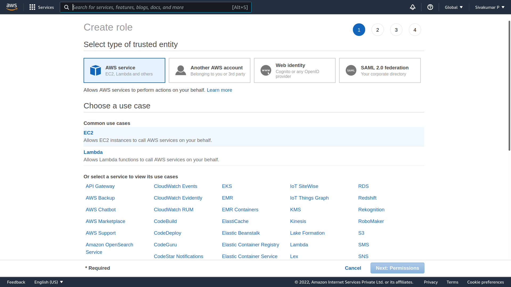
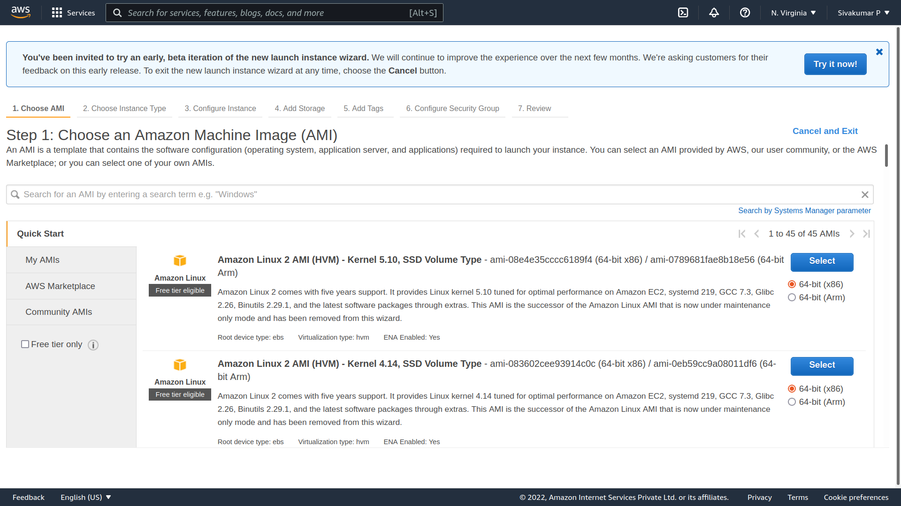
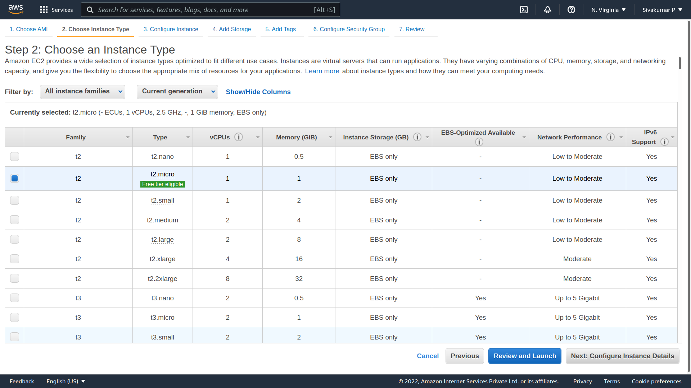
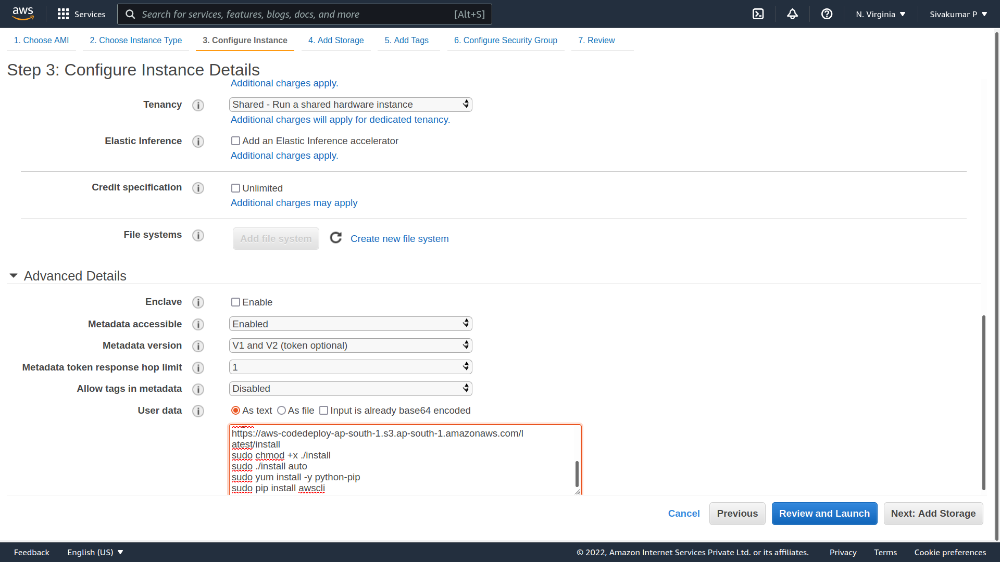

Step 1) In this step,
Login to your AWS account and go to the AWS Services tab at the top left corner.
Here, you will see all of the AWS Services categorized as per their area viz. Compute, Storage, Database, etc. For creating an EC2 instance, we have to choose Computeà EC2 as in the next step.

Choose AMI
Step 1) In this step we will do,
You will be asked to choose an AMI of your choice. (An AMI is an Amazon Machine Image. It is a template basically of an Operating System platform which you can use as a base to create your instance). Once you launch an EC2 instance from your preferred AMI, the instance will automatically be booted with the desired OS. (We will see more about AMIs in the coming part of the tutorial).
Here we are choosing the default Amazon Linux (64 bit) AMI.

Step 1) In the next step, you have to choose the type of instance you require based on your business needs.
1. We will choose t2.micro instance type, which is a 1vCPU and 1GB memory server offered by AWS.
2. Click on “Configure Instance Details” for further configurations

Step 1) No. of instances- you can provision up to 20 instances at a time. Here we are launching one instance.
Step 2) Under Purchasing Options, keep the option of ‘Request Spot Instances’ unchecked as of now. (This is done when we wish to launch Spot instances instead of on-demand ones. We will come back to following steps in the later part of the tutorial).

Step 1) In this step we do following things,
In the Add Storage step, you’ll see that the instance has been automatically provisioned a General Purpose SSD root volume of 8GB. ( Maximum volume size we can give to a General Purpose volume is 16GB)
You can change your volume size, add new volumes, change the volume type, etc.
AWS provides 3 types of EBS volumes- Magnetic, General Purpose SSD, Provisioned IOPs. You can choose a volume type based on your application’s IOPs needs.